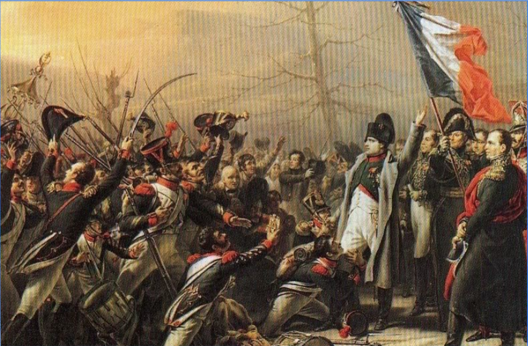
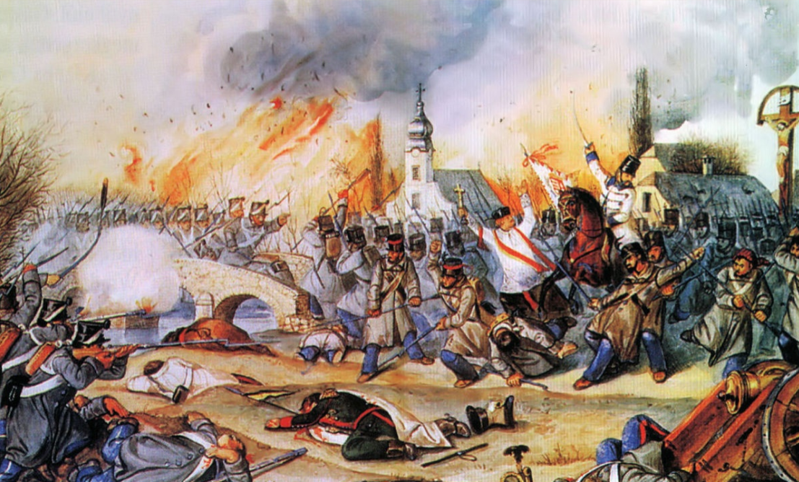
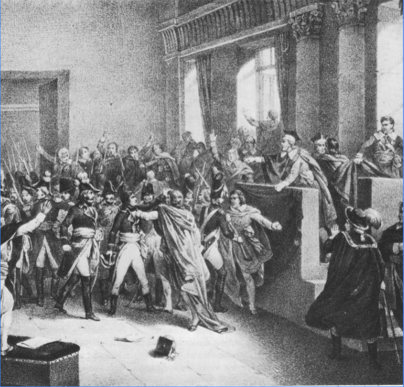

A világosi fegyverletételt követően a Habsburgok kemény megtorlásba kezdtek, céljuk az volt, hogy megakadályozzák a jövőbeli lázadásokat. A vezetők és katonák közül sokakat végeztek ki vagy ítéltek el, ami fokozta a feszültséget és az elégedetlenséget Magyarországon.
Julius Jacob von Haynau, a Habsburgok hírhedt tábornoka, a kezdeti megtorlás irányítója volt. Az általa alkalmazott brutális módszerek, mint pl. a nyilvános kivégzések és megaláztatások, gyorsan elhíresztelték hírnevét és a 'bresciai hiéna' jelzöt kapták.
1849. október 6-án 13 honvédtábornokot végeztek ki az aradi várban. Batthyány Lajos, az első magyar miniszterelnök, szintén kivégzés áldozata lett, ezzel szimbolizálva a Habsburgok háború utáni megtorlását.
A forradalmat követően a Habsburgok több száz embert börtönöztek be, köztük politikai foglyokat is. A kényszermunkára ítélések és a száműzetések a magyar nép szenvedéseit tovább növelték, fokozva a politikai feszültségeket.
A háború utáni megtorlás részeként számos arisztokrata és hadseregbeli birtokait elkobozták az osztrák állam javára. Ezen intézkedések nemcsak a gazdasági életerőt csökkentették, hanem a társadalmi feszültségeket is fokozzák.